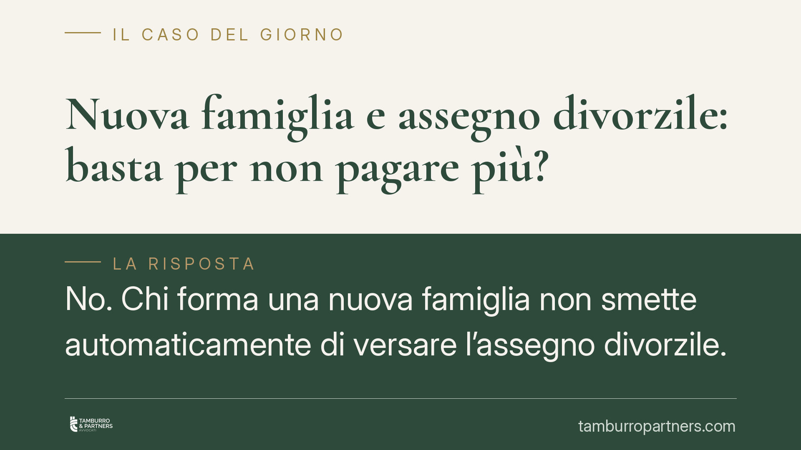

Nuova famiglia e assegno divorzile: basta per non pagare più?
No. Chi forma una nuova famiglia non smette automaticamente di versare l'assegno divorzile. La Cassazione ha ribadito che la revisione richiede la prova di una concreta e stabile modifica delle condizioni economiche, verificata attraverso un confronto con la situazione esistente al momento del divorzio. Il cambiamento di vita, da solo, non basta.

Il principio
Un tema ricorrente nei procedimenti di famiglia: l'ex coniuge obbligato forma una nuova famiglia — convivenza, nuovo matrimonio, figli — e ritiene, per questo, di poter chiedere la revoca o la riduzione dell'assegno divorzile. La risposta della giurisprudenza è netta: la nascita di un nuovo nucleo familiare non produce effetti automatici sull'obbligo.
Il punto decisivo non è il mutamento della condizione personale in sé, ma la sua traduzione in termini economici. Occorre dimostrare che le nuove responsabilità familiari abbiano concretamente e stabilmente inciso sulla capacità reddituale e patrimoniale di chi è tenuto al versamento.
Inquadramento normativo
La materia è regolata dall'articolo 9 della Legge 898/1970, che consente la revisione delle disposizioni sull'assegno divorzile "qualora sopravvengano giustificati motivi". La norma non prevede cause automatiche di estinzione: richiede un accertamento in concreto, caso per caso.
Va letta alla luce dei principi fissati dalle Sezioni Unite della Cassazione. Con la sentenza n. 11504/2017 la Corte ha superato il criterio del "tenore di vita matrimoniale" come parametro esclusivo. Con la successiva n. 18287/2018, le Sezioni Unite hanno riconosciuto all'assegno una natura composita: non solo assistenziale, ma anche perequativo-compensativa. In altre parole, l'assegno può servire a riequilibrare le disparità economiche derivanti dalle scelte compiute durante il matrimonio, ad esempio le rinunce professionali di un coniuge a vantaggio della famiglia.
Questa funzione mista è centrale: se l'assegno riconosce un contributo dato in passato dall'ex coniuge beneficiario, la semplice ricostruzione della vita affettiva dell'obbligato non ne cancella il fondamento.
Cosa significa "accertamento comparativo"
Il perno dell'analisi è il confronto tra due fotografie: la situazione economica delle parti al momento del divorzio e quella attuale. Chi chiede la revisione ha l'onere di provare che, nel frattempo, le condizioni si sono modificate in modo rilevante e duraturo.
Una spesa episodica, un calo temporaneo di reddito o un semplice aumento dei costi familiari non bastano. Serve dimostrare una compromissione effettiva della capacità di provvedere all'obbligo, valutata in rapporto all'intero quadro patrimoniale, non a una singola voce di spesa.
Implicazioni pratiche
Per l'ex coniuge obbligato. Formare una nuova famiglia non è un titolo per sospendere i versamenti. Chi lo fa unilateralmente, senza una pronuncia di revisione, resta esposto alle azioni di recupero delle somme non versate. Per ottenere una riduzione occorre costruire un quadro probatorio solido: documentazione reddituale, patrimoniale e sui nuovi carichi familiari.
Per l'ex coniuge beneficiario. La posizione resta tutelata finché la controparte non dimostra, con prove concrete, il mutamento delle condizioni. Il diritto all'assegno non viene meno per effetto delle scelte di vita dell'altro. È comunque prudente conservare la documentazione relativa alla propria situazione economica, utile in caso di contestazione.
Da entrambi i lati, la vicenda si gioca sul terreno della prova e del confronto temporale, non su automatismi.
Cosa fare in concreto
- Raccogli la documentazione economica completa. Dichiarazioni dei redditi, estratti conto, atti patrimoniali e documenti sui nuovi carichi familiari, riferiti sia al momento del divorzio sia alla situazione attuale.
- Non sospendere i pagamenti in via di fatto. Fino a una pronuncia di revisione, l'obbligo resta pienamente efficace e l'inadempimento produce conseguenze.
- Imposta il confronto in termini comparativi. Documenta non il semplice cambiamento di vita, ma il suo impatto misurabile e stabile sulla capacità economica.
- Verifica la solidità degli elementi prima di agire. È opportuno valutare se gli elementi disponibili soddisfano l'accertamento comparativo richiesto dalla giurisprudenza, prima di avviare un procedimento di revisione.
- Considera l'orizzonte temporale. È opportuno valutare il quadro su un arco duraturo: le modifiche contingenti o reversibili difficilmente integrano i "giustificati motivi" dell'art. 9.
Contributo informativo a cura di Tamburro & Partners Avvocati — Avv. Giuseppe Tamburro. Non costituisce parere legale.
Ogni famiglia ha il suo equilibrio.
Separazione, divorzio, affidamento, assegno: se vuoi un confronto riservato su una specifica situazione, scrivi allo studio. Ti rispondiamo entro un giorno lavorativo.